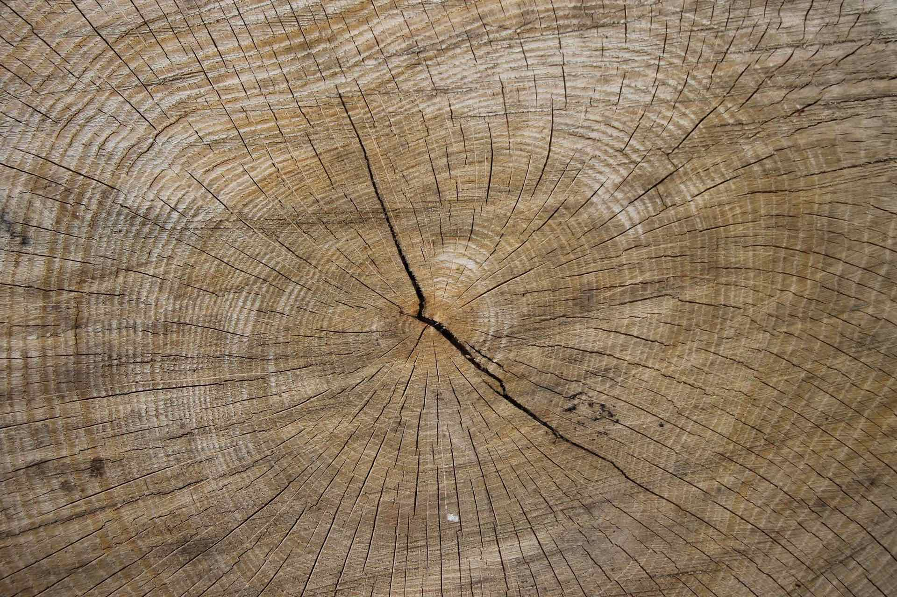

ストーリーと想いを、
社会に届ける。
県庁で8年間、土木の技術職員として公共工事に携わりました。道路、災害の復旧、公園、設備。どの現場にも、確かな仕事をする会社がありました。その仕事ぶりを、もっと多くの人に知ってほしい。そう思ってきました。
会社には、それぞれのストーリーがあります。始まりのきっかけ、仕事へのこだわり。それは、その会社の人の言葉でこそ、いちばんよく伝わります。
杜工舎は、そのお話を丁寧にうかがうことから始めます。ストーリーや想いまで含めてお聞きし、伝わるかたちに整え、社会に届ける。それをモットーに、お引き受けしています。
少ない人数で現場を回す会社にとって、仕事の中身を外に伝えることは、大きな力になります。伝えることが、次の仕事と次の仲間を呼びます。その力に、杜工舎はなりたいと考えています。
杜工舎 代表 上原 光瑛